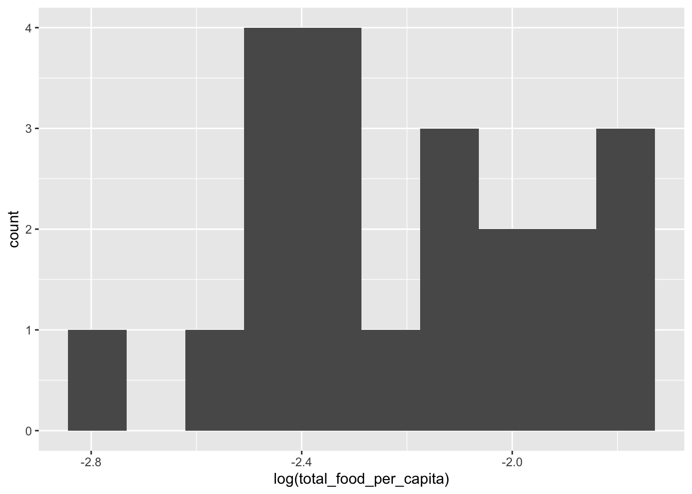
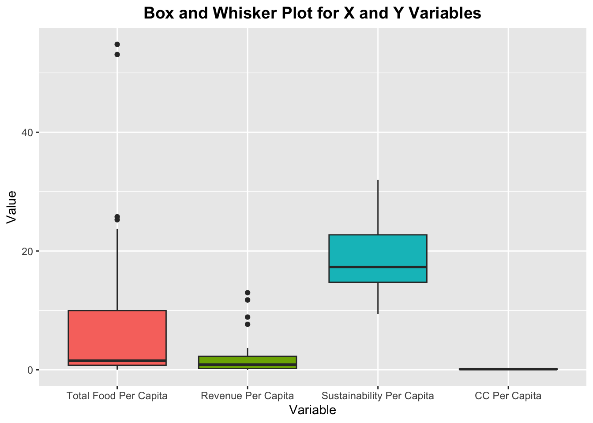
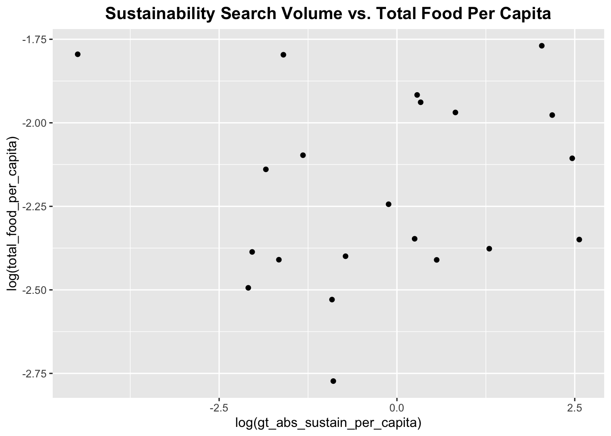
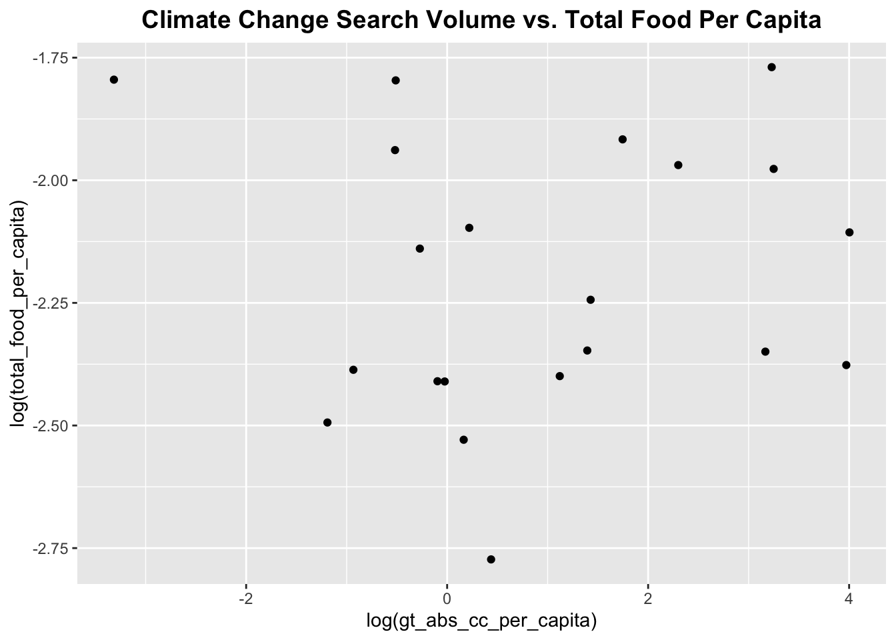
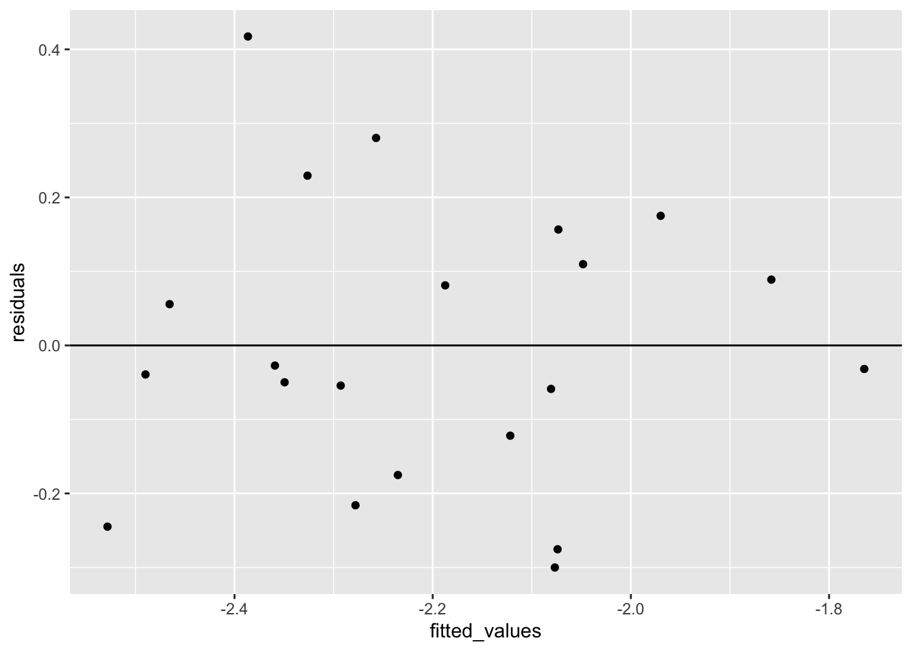
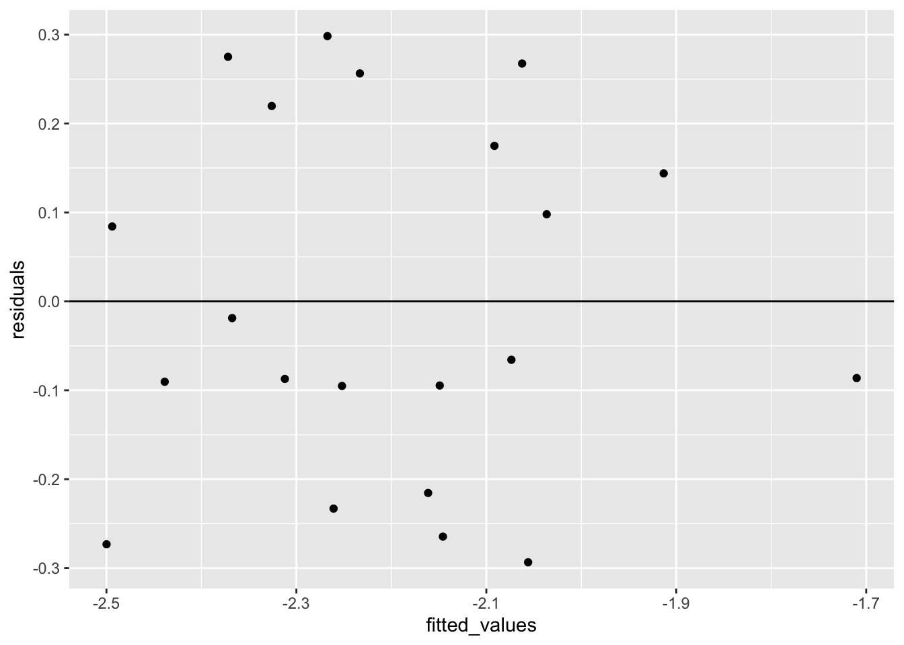
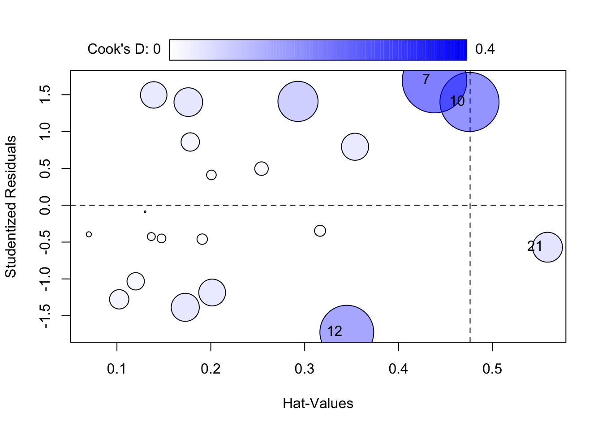

Code
library("dplyr")
library("knitr")
library(kableExtra)
library(xtable)
library(ggplot2)
library(GGally)
library(lme4)
library(car)
library(dplyr)
library(tidyverse)
library(stargazer)Asch Harwood
April 20, 2023
ReFED, a national nonprofit that advocates for the reduction of food waste, maintains several models to estimate the amount of wasted food and its greenhouse gas emissions in the United States. Collectively, U.S. residents and businesses throw out roughly 91 million tons of food annually, contributing 6 percent of the total net US greenhouse gas emissions, and compromising 22% of our total fresh waste use.
Creating system-level estimates in the food supply chain is notoriously difficult. To produce these estimates, ReFED employs a ‘mass balance’ accounting approach. For each sector, ReFED estimates the value of the total supply of food in US dollars. It then applies a price per lb conversion factor to convert dollars to tons to estimate the total suppy of food in weight. ReFED then draws on academic and private-sector studies to determine ‘surplus rates’–the share of food that is not going to its intended destination. The supply of food is multiplied by these surplus rates to determine the total amount of surplus food in a given place and year.
A limitation of this approach, however, is that the research to estimate surplus rates is rarely, if ever, repeated at regular intervals. As a result, the lack of year-over-year and geographic variation in surplus rates makes it incredibly difficult to identify systematic changes in the food waste behaviors.
My goal is to develop a cost-effective and maintainable model to estimate per capita food waste in the United States in a given year. I hypothesize that per capita food waste is a function of the current supply of available food combined with corporate and consumer knowledge, attitude, and beliefs about climate change.
Food supply is an important explanatory variable for two reasons: 1)food waste is always a share of food supply and there is always a minimum amount of food needed to feed the population, and 2)it is standard practice at food business to produce/stock more food than needed. As a result, supply almost always outstrips demand, leading to food waste.
However, I also believe that concern about climate-related issues influences food production/purchasing decisions. In particular, I hypothesize that greater concern for climate-related issues correlates with reduced food waste when controlling for issues like population. If folks are more concerned with climate-related issues, then they are more likely to try and ‘right-size’ the amount of food that is produced on the supply chain side or purchased on the consumer side.
To test this hypothesis, we need a ground truth of food waste. The best publicly available direct measurement of food waste tends to be waste characterization studies. State and local governments periodically conduct inferential waste characterization studies, where they randomly select a series of 200 - 300 lb samples from landfills and other waste management facilities across several seasons in a year, which they separate and weigh. These studies are then used to set waste management budgets, ‘right-size’ landfill capacity, and create/evaluate programs meant to divert recyclable and compostable materials from landfills.
But waste characterization studies are not conducted regularly or consistently (or at all in many places), and, to my knowledge, there are no nationally-representative waste characterization studies. The dominant approach, employed by the Environment Protection Agency and the United States Department of Agriculture, is to use a handful of the publicly available studies, calculate a per capita estimate for the study, and then scale that number by the current calendar year population size.
Nevertheless, I believe there is the potential to creatively use these studies to estimate the share of food waste in landfills at the national-level over time, and, hopefully, to determine if there are any systematic changes in food waste management behavior in the commercial and residential sectors.
How much food is currently wasted on a per capita basis in the United States?
What factors explain differences in waste between states and over time?
Food Supply
Consumer Knowledge
Corporate Knowledge
Food Waste
Year
Population
Food Supply
H0: Supermarket revenue is not correlated with per capita food waste
H1: Increased supermarket revenue is correlated with increased per capita food waste
Consumer Knowledge
H0: Google search volume about ‘climate change’ is not correlated with per capita food waste
H1: Google search volume about ‘climate change’ is negatively correlated with per capita food waste
Corporate Knowledge
H0: Google search volume about ‘sustainability’ is not correlated with per capita food waste
H1: Google search volume about ‘sustainability’ is negatively correlated with per capita food waste
Currently, no comprehensive aggregate municipal solid waste characterization datasets exist for the United States in the public domain. To address this, I have compiled roughly 300 waste characterization studies, of which I have parsed and coded roughly 50 to date, based on the following (rough) criteria1. To be eligible to be included in my dataset, each study must be:
waste = read.csv('/Users/aschharwood/Desktop/intro_quant_spring_2023/603_Spring_2023/posts/_data/x_y_state_waste.csv')
#create lists to filter waste to x, y and controls
y_col <- "total_food_per_capita"
x_cols <- c("gt_abs_sustain_per_capita","gt_abs_cc_per_capita" )
control_cols <- c('year',"state","sample_size","ibis_grcy_revenue_usd_m_per_capita_state","population")
drop_cols <- c('total_food',"total_waste_weight_per_capita","gt_norm_cc", "ibis_grcy_revenue_usd_m_state","gt_norm_sustain", "gt_norm_cc_per_capita", "total_waste_weight","gt_abs_sustain", "gt_abs_cc", "sample_size_per_capita", "coincident_index")
x_y_cols <- append(x_cols, y_col)
x_y_control_cols <- c(x_y_cols, control_cols)
#filter dataset
x_y_controls_df <- subset(waste, select = x_y_control_cols )
# Reorder columns
desired_order <- c("state", "year", "total_food_per_capita", "gt_abs_sustain_per_capita", "gt_abs_cc_per_capita", "ibis_grcy_revenue_usd_m_per_capita_state", "sample_size", "population")
x_y_controls_df <- x_y_controls_df[, desired_order]
str(x_y_controls_df)'data.frame': 21 obs. of 8 variables:
$ state : chr "florida" "minnesota" "kansas" "pennsylvania" ...
$ year : int 2000 2000 2001 2001 2001 2002 2003 2005 2005 2006 ...
$ total_food_per_capita : num 0.0826 0.0797 0.0625 0.092 0.0898 ...
$ gt_abs_sustain_per_capita : num 0.124 0.401 0.409 0.131 0.19 ...
$ gt_abs_cc_per_capita : num 0.304 1.179 1.549 0.393 0.908 ...
$ ibis_grcy_revenue_usd_m_per_capita_state: num 16.09 11.73 9.66 12.54 9.39 ...
$ sample_size : num 250 390 150 1185 400 ...
$ population : int 16047515 4933692 2702162 12298970 5406835 3513424 35253159 8925922 2964454 859268 ...# Create a data frame with the data dictionary
data_dictionary <- data.frame(
`col_name` = c("state", "year", "total_food_per_capita", "gt_abs_sustain_per_capita", "gt_abs_cc_per_capita", "ibis_grcy_revenue_usd_m_per_capita_state", "sample_size", "population"),
`d_type` = c("chr", "int", "dbl", "dbl", "dbl", "dbl", "num", "int"),
description = c(
"U.S. state where the study was conducted",
"Year when the study was conducted",
"Total food per capita in the studied area",
"Per capita absolute Google search volume for sustainability",
"Per capita absolute Google search volume for climate change",
"Per capita supermarket revenue (in USD million) for the state",
"Number of samples from original waste characterization study",
"Population of the studied area"
)
)
kable(data_dictionary)| col_name | d_type | description |
|---|---|---|
| state | chr | U.S. state where the study was conducted |
| year | int | Year when the study was conducted |
| total_food_per_capita | dbl | Total food per capita in the studied area |
| gt_abs_sustain_per_capita | dbl | Per capita absolute Google search volume for sustainability |
| gt_abs_cc_per_capita | dbl | Per capita absolute Google search volume for climate change |
| ibis_grcy_revenue_usd_m_per_capita_state | dbl | Per capita supermarket revenue (in USD million) for the state |
| sample_size | num | Number of samples from original waste characterization study |
| population | int | Population of the studied area |

# Reshape the data to long format without the year variable
long_data <- x_y_controls_df %>%
select(total_food_per_capita, ibis_grcy_revenue_usd_m_per_capita_state, gt_abs_sustain_per_capita, gt_abs_cc_per_capita) %>%
gather(key = "variable", value = "value")
# Create box and whisker plot for multiple variables without year
ggplot(data = long_data, aes(x = variable, y = value, fill = variable)) +
geom_boxplot() +
ggtitle("Box and Whisker Plot for X and Y Variables") +
xlab("Variable") +
ylab("Value") +
theme(plot.title = element_text(hjust = 0.5, face = "bold", size = 14)) +
scale_fill_discrete(name = "Variable", labels = c("Total Food Per Capita", "Revenue Per Capita", "Sustainability Per Capita", "CC Per Capita")) +
theme(legend.position = "none") +
scale_x_discrete(labels = c("Total Food Per Capita", "Revenue Per Capita", "Sustainability Per Capita", "CC Per Capita"))


Given the small size of the dataset and the counter intuitive finding around the climate change trend discussed below, I’m withholding judgement about which is the ‘better’ model until I have increased the number of training observations for V2.
Model 1: log(total_food_per_capita) ~ log(gt_abs_sustain_per_capita) + log(gt_abs_cc_per_capita) + interaction_term + year + ibis_grcy_revenue_usd_m_per_capita_state + population
Uses log(gt_abs_sustain_per_capita) + log(gt_abs_cc_per_capita) + interaction_term +ibis_grcy_revenue_usd_m_per_capita_state as explanatory variables
Controls for year and population
Uses weighted least squares
Interpretation
log(gt_abs_sustain_per_capita): A 1% increase in log(sustainability search volume)is associated with a -0.31% decrease in total food per capita, holding all other variables constant. This is a negative relationship, indicating that as interest in sustainability increases, total food waste per capita decreases. This finding is statistically significant. Therefore, we can reject the null hypothesis in favor of the alternative that Google search volume about ‘sustainability’ is negatively correlated with per capita food waste.
log(gt_abs_cc_per_capita): A 1% increase in log(climate change search volume) is associated with a 0.11% increase in total food waste per capita, holding all other variables constant. This positive relationship is counter intuitive. However, the results are not statistically significant. There, we cannot reject the null hypothesis that Google search volume about ‘climate change’ is not correlated with per capita food waste.
interaction_term: The interaction term captures the combined effect of climate change and sustainability search volume on total food waste per capita. A 1-unit increase in the interaction term is associated with a 0.001-unit increase in the log total food waste per capita, holding all other variables constant. This finding is also counter intuitive. Nevertheless, while the effect is statistically significant, its an incredibly small effect.
ibis_grcy_revenue_usd_m_per_capita_state: A 1-unit increase in grocery revenue per capita is associated with a 0.05-unit increase in the log of total food waste per capita, holding all other variables constant. This indicates a positive relationship between grocery revenue per capita and total food per capita. This finding is significant. Therefore, we can reject the null hypothesis in favor of the alternative that increased supermarket revenue is correlated with increased per capita food waste
Adjusted R-squared is 0.86, meaning that approximately 86% of the variation in the log of total food waste per capita can be explained by the included independent variables.
Model 2: log(total_food_per_capita) ~ log(gt_abs_sustain_per_capita) + year + ibis_grcy_revenue_usd_m_per_capita_state + population
Uses log(gt_abs_sustain_per_capita) +ibis_grcy_revenue_usd_m_per_capita_state as explanatory variables and drops climate change search volume and interaction term
Controls for year and population
Uses weighted least squares
Interpretation/Hypothesis Testing
log(gt_abs_sustain_per_capita): A 1% increase in log(sustainability search volume) is associated with -0.15% reduction in per capita food waste. This is a negative relationship, indicating that as interest in sustainability increases, total food waste per capita decreases. This finding is statistically significant. Therefore, we can reject the null hypothesis in favor of the alternative that Google search volume about ‘sustainability’ is negatively correlated with per capita food waste.
ibis_grcy_revenue_usd_m_per_capita_state: A 1-unit increase in grocery revenue per capita is associated with a 0.04-unit increase in the log of total food waste per capita, holding all other variables constant. This indicates a positive relationship between grocery revenue per capita and total food per capita. This finding is significant. Therefore, we can reject the null hypothesis in favor of the alternative that increased supermarket revenue is correlated with increased per capita food waste.
The adjusted R-squared value is 0.81, meaning that approximately 81% of the variation in the log of total food waste per capita can be explained by the included independent variables.
x_y_controls_df$interaction_term <- x_y_controls_df$gt_abs_cc_per_capita * x_y_controls_df$gt_abs_sustain_per_capita
fit_inter_pop <- lm(log(total_food_per_capita) ~ log(gt_abs_sustain_per_capita) + log(gt_abs_cc_per_capita) + interaction_term + year + ibis_grcy_revenue_usd_m_per_capita_state + population, data=x_y_controls_df, weights=x_y_controls_df$weights)
fit_no_int_no_cc <- lm(log(total_food_per_capita) ~ log(gt_abs_sustain_per_capita) + year + ibis_grcy_revenue_usd_m_per_capita_state + population, data=x_y_controls_df, weights=x_y_controls_df$weights)
Food Waste Estimation Model Comparison
===============================================================================
Dependent variable:
--------------------------------------
log(total_food_per_capita)
M1:Interact/Pop M2:NoInteractCC
(1) (2)
-------------------------------------------------------------------------------
log(gt_abs_sustain_per_capita) -0.10 0.02
(-0.35, 0.15) (-0.11, 0.14)
log(gt_abs_cc_per_capita) 0.02
(-0.14, 0.18)
interaction_term 0.001
(-0.001, 0.002)
year 0.01 0.004
(-0.02, 0.04) (-0.02, 0.03)
ibis_grcy_revenue_usd_m_per_capita_state 0.03 0.02
(-0.004, 0.06) (-0.004, 0.05)
population 0.00 0.00
(-0.0000, 0.0000) (-0.00, 0.0000)
Constant -27.81 -11.02
(-92.22, 36.61) (-62.02, 39.98)
-------------------------------------------------------------------------------
Observations 21 21
R2 0.54 0.49
Adjusted R2 0.34 0.36
Residual Std. Error 0.23 (df = 14) 0.22 (df = 16)
F Statistic 2.69* (df = 6; 14) 3.80** (df = 4; 16)
===============================================================================
Note: *p<0.1; **p<0.05; ***p<0.01
Call:
lm(formula = log(total_food_per_capita) ~ log(gt_abs_sustain_per_capita) +
log(gt_abs_cc_per_capita) + interaction_term + year + ibis_grcy_revenue_usd_m_per_capita_state +
population, data = x_y_controls_df, weights = x_y_controls_df$weights)
Residuals:
Min 1Q Median 3Q Max
-0.30006 -0.12195 -0.03181 0.10978 0.41744
Coefficients:
Estimate Std. Error t value Pr(>|t|)
(Intercept) -2.781e+01 3.287e+01 -0.846 0.412
log(gt_abs_sustain_per_capita) -1.041e-01 1.276e-01 -0.815 0.429
log(gt_abs_cc_per_capita) 1.930e-02 7.964e-02 0.242 0.812
interaction_term 6.638e-04 6.153e-04 1.079 0.299
year 1.246e-02 1.645e-02 0.757 0.462
ibis_grcy_revenue_usd_m_per_capita_state 2.603e-02 1.522e-02 1.710 0.109
population 2.026e-10 1.222e-08 0.017 0.987
Residual standard error: 0.2269 on 14 degrees of freedom
Multiple R-squared: 0.5353, Adjusted R-squared: 0.3361
F-statistic: 2.688 on 6 and 14 DF, p-value: 0.05978# Get the residuals and fitted values from the model
residuals <- residuals(fit_inter_pop)
fitted_values <- fitted(fit_inter_pop)
# Add the residuals and fitted values as new columns in the dataframe
x_y_controls_df$residuals <- residuals
x_y_controls_df$fitted_values <- fitted_values
ggplot(data = x_y_controls_df, aes(x=fitted_values, y=residuals)) +
geom_point() +
geom_hline(yintercept = 0)
log(gt_abs_sustain_per_capita)
20.461397
log(gt_abs_cc_per_capita)
8.913393
interaction_term
3.783062
year
5.236875
ibis_grcy_revenue_usd_m_per_capita_state
3.301334
population
7.399403 An inspection of residuals suggests a poorer fit than the previous model. This model clearly has several influential outliers. However, multicollinearity, while still high, is lower than with the previous model.
Call:
lm(formula = log(total_food_per_capita) ~ log(gt_abs_sustain_per_capita) +
year + ibis_grcy_revenue_usd_m_per_capita_state + population,
data = x_y_controls_df, weights = x_y_controls_df$weights)
Residuals:
Min 1Q Median 3Q Max
-0.29342 -0.09513 -0.06571 0.17488 0.29828
Coefficients:
Estimate Std. Error t value Pr(>|t|)
(Intercept) -1.102e+01 2.602e+01 -0.424 0.678
log(gt_abs_sustain_per_capita) 1.810e-02 6.342e-02 0.285 0.779
year 4.149e-03 1.303e-02 0.318 0.754
ibis_grcy_revenue_usd_m_per_capita_state 2.160e-02 1.321e-02 1.635 0.122
population 9.437e-09 9.006e-09 1.048 0.310
Residual standard error: 0.223 on 16 degrees of freedom
Multiple R-squared: 0.4869, Adjusted R-squared: 0.3586
F-statistic: 3.796 on 4 and 16 DF, p-value: 0.02351# Get the residuals and fitted values from the model
residuals <- residuals(fit_no_int_no_cc)
fitted_values <- fitted(fit_no_int_no_cc)
# Add the residuals and fitted values as new columns in the dataframe
x_y_controls_df$residuals <- residuals
x_y_controls_df$fitted_values <- fitted_values
ggplot(data = x_y_controls_df, aes(x=fitted_values, y=residuals)) +
geom_point() +
geom_hline(yintercept = 0)
log(gt_abs_sustain_per_capita)
5.228978
year
3.402537
ibis_grcy_revenue_usd_m_per_capita_state
2.574899
population
4.158284 
StudRes Hat CookD
7 1.6911524 0.4383265 0.39989671
10 1.4010859 0.4755714 0.33581882
12 -1.7229492 0.3448754 0.27830446
21 -0.5699311 0.5586771 0.08586253Many of the problems in this model were expected given the incomplete ‘toy’ dataset I choose to use. That was an international decision. Before I devoted significant time to parsing 100 to 1000 page waste characterization pdf files, I wanted to see if I wanted to evaluate whether this approach might have merit. Based on this initial analysis, I do think there is enough evidence to move forward with creating a more robust dataset. The most important first step will be to increase the number of waste characterization observation. There is also an opportunity to build ‘upstream’ and ‘downstream’ models. I used total aggregate per capita food waste as my dependent variable but nearly all waste characterization studies make a distinction between residential and commercial waste.
I recognize that we were encouraged to work with pre-existing datasets. Nevertheless, I view this as an opportunity to prototype a project I believe might have real-world applicability in my professional life.↩︎
---
title: "Estimating Per Capita Food Waste in the United States"
author: "Asch Harwood"
description: "Final Project Part 2: Proposal"
date: "04/20/23"
format:
html:
toc: true
code-fold: true
code-copy: true
code-tools: true
categories:
- finalpart2
editor:
markdown:
wrap: 72
---
```{r message= FALSE}
library("dplyr")
library("knitr")
library(kableExtra)
library(xtable)
library(ggplot2)
library(GGally)
library(lme4)
library(car)
library(dplyr)
library(tidyverse)
library(stargazer)
```
# Background
ReFED, a national nonprofit that advocates for the reduction of food
waste, maintains several models to estimate the amount of wasted food
and its greenhouse gas emissions in the United States. Collectively,
U.S. residents and businesses throw out roughly 91 million tons of food
annually, contributing 6 percent of the total net US greenhouse gas
emissions, and compromising 22% of our total fresh waste use.
Creating system-level estimates in the food supply chain is notoriously
difficult. To produce these estimates, ReFED employs a 'mass balance'
accounting approach. For each sector, ReFED estimates the value of the
total supply of food in US dollars. It then applies a price per lb
conversion factor to convert dollars to tons to estimate the total suppy
of food in weight. ReFED then draws on academic and private-sector
studies to determine 'surplus rates'--the share of food that is not
going to its intended destination. The supply of food is multiplied by
these surplus rates to determine the total amount of surplus food in a
given place and year.
A limitation of this approach, however, is that the research to estimate
surplus rates is rarely, if ever, repeated at regular intervals. As a
result, the lack of year-over-year and geographic variation in surplus
rates makes it incredibly difficult to identify systematic changes in
the food waste behaviors.
# Proposal
My goal is to develop a cost-effective and maintainable model to
estimate per capita food waste in the United States in a given year. I
hypothesize that per capita food waste is a function of the current
supply of available food combined with corporate and consumer knowledge,
attitude, and beliefs about climate change.
Food supply is an important explanatory variable for two reasons: 1)food
waste is always a share of food supply and there is always a minimum
amount of food needed to feed the population, and 2)it is standard
practice at food business to produce/stock more food than needed. As a
result, supply almost always outstrips demand, leading to food waste.
However, I also believe that concern about climate-related issues
influences food production/purchasing decisions. In particular, I
hypothesize that greater concern for climate-related issues correlates
with reduced food waste when controlling for issues like population. If
folks are more concerned with climate-related issues, then they are more
likely to try and 'right-size' the amount of food that is produced on
the supply chain side or purchased on the consumer side.
To test this hypothesis, we need a ground truth of food waste. The best
publicly available direct measurement of food waste tends to be waste
characterization studies. State and local governments periodically
conduct inferential waste characterization studies, where they randomly
select a series of 200 - 300 lb samples from landfills and other waste
management facilities across several seasons in a year, which they
separate and weigh. These studies are then used to set waste management
budgets, 'right-size' landfill capacity, and create/evaluate programs
meant to divert recyclable and compostable materials from landfills.
But waste characterization studies are not conducted regularly or
consistently (or at all in many places), and, to my knowledge, there are
no nationally-representative waste characterization studies. The
dominant approach, employed by the Environment Protection Agency and the
United States Department of Agriculture, is to use a handful of the
publicly available studies, calculate a per capita estimate for the
study, and then scale that number by the current calendar year
population size.
Nevertheless, I believe there is the potential to creatively use these
studies to estimate the share of food waste in landfills at the
national-level over time, and, hopefully, to determine if there are any
systematic changes in food waste management behavior in the commercial
and residential sectors.
### Research Questions
1. How much food is currently wasted on a per capita basis in the
United States?
2. What factors explain differences in waste between states and over
time?
### Independent/Dependent Variables
**Food Supply**
- As a proxy for food supply, which is quite difficult to measure, I
use supermarket revenue data by state from the years 2005 - 2021,
which I extracted from Ibisworld State Industry reports. I then
converted this measure to a state per capita basis. In order to fill
the missing years from 2000 - 2005, I fit a linear regression based
on state, population, and year. However, this is meant to be a
placeholder for the sack of this exercise. In future iterations, I
plan to use data from 2005 to present.
**Consumer Knowledge**
- As a proxy for consumer knowledge, I extracted state-level search
volume for the topic, "Climate Change", using Google Trends
Supercharged, which provides absolute search volumn from 2004 to
present. I then converted this measure to a state per capita basis.
To fill missing years 2000 - 2003, I also fit a linear regression to
serve as placeholder. Again, for future iterations, I plan to use a
baseline of 2005.
**Corporate Knowledge**
- As a proxy for corporate knowledge/concern about climate changed, I
extracted state-level search volume for the topic, "Sustainability",
using Google Trends Supercharged. I then converted this measure to a
state per capita basis. To fill missing years 2000 - 2003, I also
fit a linear regression to serve as placeholder. Again, for future
iterations, I plan to use a baseline of 2005.
**Food Waste**
- For the dependent variable, food waste per capita, I extracted
absolute food waste weights from 20 state-level municipal solid
waste characterization studies as well as the sample sizes collected
to produce each of those calculations. I then calculated food waste
per capita. Given the small size of this dataset, I multiplied the
sample size for each observation by the population in the respective
state, which I then used as weights in the model.
### Control Variables
**Year**
- I wanted to control for the impact of change over time because
estimates from other models (i.e. ReFED) show a general increase in
food waste over time.
**Population**
- I control for population in two different ways - using per capita
measures and including population as a control variable. Per capita
metrics do not fully capture the influence of population, which
hypothetically should correlate with changes in food waste.
Controlling for population increased the coefficients for my two
statistically significant explanatory variables as well as the
multiple and adjusted r-squared.
### Hypothesis
**Food Supply**
H0: Supermarket revenue is not correlated with per capita food waste
H1: Increased supermarket revenue is correlated with increased per
capita food waste
**Consumer Knowledge**
H0: Google search volume about 'climate change' is not correlated with
per capita food waste
H1: Google search volume about 'climate change' is negatively correlated
with per capita food waste
**Corporate Knowledge**
H0: Google search volume about 'sustainability' is not correlated with
per capita food waste
H1: Google search volume about 'sustainability' is negatively correlated
with per capita food waste
### Exploratory Data Analysis
Currently, no comprehensive aggregate municipal solid waste
characterization datasets exist for the United States in the public
domain. To address this, I have compiled roughly 300 waste
characterization studies, of which I have parsed and coded roughly 50 to
date, based on the following (rough) criteria[^1]. To be eligible to be
included in my dataset, each study must be:
[^1]: I recognize that we were encouraged to work with pre-existing
datasets. Nevertheless, I view this as an opportunity to prototype a
project I believe might have real-world applicability in my
professional life.
- conducted in the United States and be representative of the state,
county, or local level between the years of 2000 and 2021
- infer the amount of total food as a share of the total amount of
municipal solid waste for an entire year
- report the number of samples, which need to be between 200 - 300 lbs
each
```{r}
waste = read.csv('/Users/aschharwood/Desktop/intro_quant_spring_2023/603_Spring_2023/posts/_data/x_y_state_waste.csv')
#create lists to filter waste to x, y and controls
y_col <- "total_food_per_capita"
x_cols <- c("gt_abs_sustain_per_capita","gt_abs_cc_per_capita" )
control_cols <- c('year',"state","sample_size","ibis_grcy_revenue_usd_m_per_capita_state","population")
drop_cols <- c('total_food',"total_waste_weight_per_capita","gt_norm_cc", "ibis_grcy_revenue_usd_m_state","gt_norm_sustain", "gt_norm_cc_per_capita", "total_waste_weight","gt_abs_sustain", "gt_abs_cc", "sample_size_per_capita", "coincident_index")
x_y_cols <- append(x_cols, y_col)
x_y_control_cols <- c(x_y_cols, control_cols)
#filter dataset
x_y_controls_df <- subset(waste, select = x_y_control_cols )
# Reorder columns
desired_order <- c("state", "year", "total_food_per_capita", "gt_abs_sustain_per_capita", "gt_abs_cc_per_capita", "ibis_grcy_revenue_usd_m_per_capita_state", "sample_size", "population")
x_y_controls_df <- x_y_controls_df[, desired_order]
str(x_y_controls_df)
```
```{r}
# Create a data frame with the data dictionary
data_dictionary <- data.frame(
`col_name` = c("state", "year", "total_food_per_capita", "gt_abs_sustain_per_capita", "gt_abs_cc_per_capita", "ibis_grcy_revenue_usd_m_per_capita_state", "sample_size", "population"),
`d_type` = c("chr", "int", "dbl", "dbl", "dbl", "dbl", "num", "int"),
description = c(
"U.S. state where the study was conducted",
"Year when the study was conducted",
"Total food per capita in the studied area",
"Per capita absolute Google search volume for sustainability",
"Per capita absolute Google search volume for climate change",
"Per capita supermarket revenue (in USD million) for the state",
"Number of samples from original waste characterization study",
"Population of the studied area"
)
)
kable(data_dictionary)
```
```{r}
ggplot(data = x_y_controls_df, aes(x=log(total_food_per_capita))) +
geom_histogram(bins=10)
```
```{r}
# Reshape the data to long format without the year variable
long_data <- x_y_controls_df %>%
select(total_food_per_capita, ibis_grcy_revenue_usd_m_per_capita_state, gt_abs_sustain_per_capita, gt_abs_cc_per_capita) %>%
gather(key = "variable", value = "value")
# Create box and whisker plot for multiple variables without year
ggplot(data = long_data, aes(x = variable, y = value, fill = variable)) +
geom_boxplot() +
ggtitle("Box and Whisker Plot for X and Y Variables") +
xlab("Variable") +
ylab("Value") +
theme(plot.title = element_text(hjust = 0.5, face = "bold", size = 14)) +
scale_fill_discrete(name = "Variable", labels = c("Total Food Per Capita", "Revenue Per Capita", "Sustainability Per Capita", "CC Per Capita")) +
theme(legend.position = "none") +
scale_x_discrete(labels = c("Total Food Per Capita", "Revenue Per Capita", "Sustainability Per Capita", "CC Per Capita"))
```
```{r}
ggplot(data = x_y_controls_df, aes(x=log(gt_abs_sustain_per_capita), y=log(total_food_per_capita))) +
geom_point() +
ggtitle("Sustainability Search Volume vs. Total Food Per Capita") +
theme(plot.title = element_text(hjust = 0.5, face = "bold", size = 14))
```
```{r}
ggplot(data = x_y_controls_df, aes(x=log(gt_abs_cc_per_capita), y=log(total_food_per_capita))) +
geom_point() +
ggtitle("Climate Change Search Volume vs. Total Food Per Capita") +
theme(plot.title = element_text(hjust = 0.5, face = "bold", size = 14))
```
```{r}
ggplot(data = x_y_controls_df, aes(x=log(ibis_grcy_revenue_usd_m_per_capita_state), y=log(total_food_per_capita))) +
geom_point() +
ggtitle("Grocery Revenue Per Capita vs. Total Food Per Capita") +
theme(plot.title = element_text(hjust = 0.5, face = "bold", size = 14))
```
# Model Comparison
Given the small size of the dataset and the counter intuitive finding
around the climate change trend discussed below, I'm withholding
judgement about which is the 'better' model until I have increased the
number of training observations for V2.
**Model 1**:
`log(total_food_per_capita) ~ log(gt_abs_sustain_per_capita) + log(gt_abs_cc_per_capita) + interaction_term + year + ibis_grcy_revenue_usd_m_per_capita_state + population`
- Uses
`log(gt_abs_sustain_per_capita) + log(gt_abs_cc_per_capita) + interaction_term +ibis_grcy_revenue_usd_m_per_capita_state`
as explanatory variables
- Controls for year and population
- Uses weighted least squares
**Interpretation**
1. **`log(gt_abs_sustain_per_capita)`**: A 1% increase in
log(sustainability search volume)is associated with a -0.31%
decrease in total food per capita, holding all other variables
constant. This is a negative relationship, indicating that as
interest in sustainability increases, total food waste per capita
decreases. This finding is statistically significant. Therefore, we
can reject the null hypothesis in favor of the alternative that
Google search volume about 'sustainability' is negatively correlated
with per capita food waste.
2. **`log(gt_abs_cc_per_capita)`**: A 1% increase in log(climate change
search volume) is associated with a 0.11% increase in total food
waste per capita, holding all other variables constant. This
positive relationship is counter intuitive. However, the results are
not statistically significant. There, we cannot reject the null
hypothesis that Google search volume about 'climate change' is not
correlated with per capita food waste.
3. **`interaction_term`**: The interaction term captures the combined
effect of climate change and sustainability search volume on total
food waste per capita. A 1-unit increase in the interaction term is
associated with a 0.001-unit increase in the log total food waste
per capita, holding all other variables constant. This finding is
also counter intuitive. Nevertheless, while the effect is
statistically significant, its an incredibly small effect.
4. **`ibis_grcy_revenue_usd_m_per_capita_state`**: A 1-unit increase in
grocery revenue per capita is associated with a 0.05-unit increase
in the log of total food waste per capita, holding all other
variables constant. This indicates a positive relationship between
grocery revenue per capita and total food per capita. This finding
is significant. Therefore, we can reject the null hypothesis in
favor of the alternative that increased supermarket revenue is
correlated with increased per capita food waste
5. Adjusted R-squared is 0.86, meaning that approximately 86% of the
variation in the log of total food waste per capita can be explained
by the included independent variables.
**Model 2**:
`log(total_food_per_capita) ~ log(gt_abs_sustain_per_capita) + year + ibis_grcy_revenue_usd_m_per_capita_state + population`
- Uses
`log(gt_abs_sustain_per_capita) +ibis_grcy_revenue_usd_m_per_capita_state`
as explanatory variables and drops climate change search volume and
interaction term
- Controls for year and population
- Uses weighted least squares
**Interpretation/Hypothesis Testing**
1. `log(gt_abs_sustain_per_capita)`: A 1% increase in
log(sustainability search volume) is associated with -0.15%
reduction in per capita food waste. This is a negative relationship,
indicating that as interest in sustainability increases, total food
waste per capita decreases. This finding is statistically
significant. Therefore, we can reject the null hypothesis in favor
of the alternative that Google search volume about 'sustainability'
is negatively correlated with per capita food waste.
2. `ibis_grcy_revenue_usd_m_per_capita_state`: A 1-unit increase in
grocery revenue per capita is associated with a 0.04-unit increase
in the log of total food waste per capita, holding all other
variables constant. This indicates a positive relationship between
grocery revenue per capita and total food per capita. This finding
is significant. Therefore, we can reject the null hypothesis in
favor of the alternative that increased supermarket revenue is
correlated with increased per capita food waste.
3. The adjusted R-squared value is 0.81, meaning that approximately 81%
of the variation in the log of total food waste per capita can be
explained by the included independent variables.
```{r model_comparison}
x_y_controls_df$interaction_term <- x_y_controls_df$gt_abs_cc_per_capita * x_y_controls_df$gt_abs_sustain_per_capita
fit_inter_pop <- lm(log(total_food_per_capita) ~ log(gt_abs_sustain_per_capita) + log(gt_abs_cc_per_capita) + interaction_term + year + ibis_grcy_revenue_usd_m_per_capita_state + population, data=x_y_controls_df, weights=x_y_controls_df$weights)
fit_no_int_no_cc <- lm(log(total_food_per_capita) ~ log(gt_abs_sustain_per_capita) + year + ibis_grcy_revenue_usd_m_per_capita_state + population, data=x_y_controls_df, weights=x_y_controls_df$weights)
```
```{r warning=FALSE}
# Create a side-by-side table of the models using stargazer
stargazer(fit_inter_pop, fit_no_int_no_cc,type = "text",
title = "Food Waste Estimation Model Comparison",
align = TRUE,
column.labels = c("M1:Interact/Pop", "M2:NoInteractCC"),
ci = TRUE, # Show confidence intervals
digits = 2)
```
# Model 1 Diagnostics
- Overall, while the residuals plots below seem promising in that
errors are appear to be normally distributed, all but two of our
explanatory and control variables have VIFs over 10, which suggests
high multicollinearity in the model. Likewise, the InfluencePlot
shows several, potentially influential outliers. Given the very
small size of the dataset, these issues are to be expected and I
suspect will be resolved by:
1. Setting 2005 as the baseline for our data
2. Increasing the number of observations in the data set
```{r}
summary(fit_inter_pop)
```
```{r}
# Get the residuals and fitted values from the model
residuals <- residuals(fit_inter_pop)
fitted_values <- fitted(fit_inter_pop)
# Add the residuals and fitted values as new columns in the dataframe
x_y_controls_df$residuals <- residuals
x_y_controls_df$fitted_values <- fitted_values
ggplot(data = x_y_controls_df, aes(x=fitted_values, y=residuals)) +
geom_point() +
geom_hline(yintercept = 0)
```
```{r}
qqnorm(residuals, main="Q-Q Plot of Residuals")
qqline(residuals)
```
```{r}
vif(fit_inter_pop)
```
```{r}
influencePlot(fit_inter_pop)
```
# Model 2 Diagnostics
An inspection of residuals suggests a poorer fit than the previous
model. This model clearly has several influential outliers. However,
multicollinearity, while still high, is lower than with the previous
model.
```{r}
summary(fit_no_int_no_cc)
```
```{r}
# Get the residuals and fitted values from the model
residuals <- residuals(fit_no_int_no_cc)
fitted_values <- fitted(fit_no_int_no_cc)
# Add the residuals and fitted values as new columns in the dataframe
x_y_controls_df$residuals <- residuals
x_y_controls_df$fitted_values <- fitted_values
ggplot(data = x_y_controls_df, aes(x=fitted_values, y=residuals)) +
geom_point() +
geom_hline(yintercept = 0)
```
```{r}
qqnorm(residuals, main="Q-Q Plot of Residuals")
qqline(residuals)
```
```{r}
vif(fit_no_int_no_cc)
```
```{r}
influencePlot(fit_no_int_no_cc)
```
### Next Steps
Many of the problems in this model were expected given the incomplete 'toy' dataset I choose to use. That was an international decision. Before I devoted significant time to parsing 100 to 1000 page waste characterization pdf files, I wanted to see if I wanted to evaluate whether this approach might have merit. Based on this initial analysis, I do think there is enough evidence to move forward with creating a more robust dataset. The most important first step will be to increase the number of waste characterization observation. There is also an opportunity to build 'upstream' and 'downstream' models. I used total aggregate per capita food waste as my dependent variable but nearly all waste characterization studies make a distinction between residential and commercial waste.